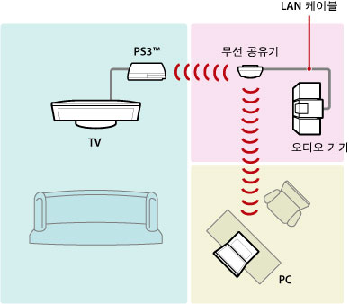
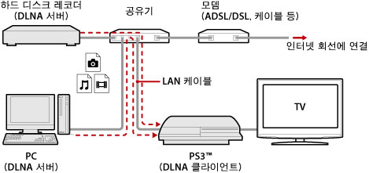
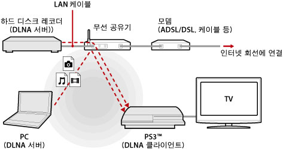
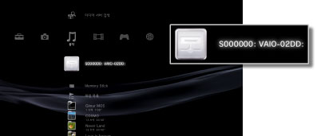
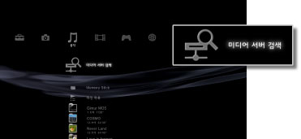

미디어 서버 접속
DLNA에 대응하는 기기에 접속하기 위한 설정을 합니다.
| 활성화하기 | DLNA에 대응하는 기기로의 접속을 활성화합니다. |
|---|---|
| 비활성화하기 | DLNA에 대응하는 기기로의 접속을 비활성화합니다. |
DLNA 에 대하여
DLNA(Digital Living Network Alliance)는 PC, 하드 디스크 레코더 및 TV와 같은 디지털 기기를 네트워크로 접속하여 다른 기기에 있는 데이터를 공유할 수 있게 하는 표준입니다.
DLNA에는 이미지, 음악, 동영상 파일 등의 데이터를 제공하는 쪽(서버)과 데이터를 수신하는 쪽(클라이언트)의 2종류가 있습니다. 두 기능을 모두 가진 기기도 있습니다. PS3™를 클라이언트로 사용하면 DLAN 서버 기능을 가진 PC나 하드 디스크 레코더 등에 저장된 이미지, 음악, 동영상 파일 등의 데이터를 네트워크를 통해 PS3™에서 재생할 수 있습니다.

PS3™와 DLNA 서버 접속하기
유선 또는 무선으로 PS3™와 DLNA 서버를 접속합니다.
유선으로 PC와 접속할 경우의 예

무선으로 PC와 접속할 경우의 예

DLNA 서버 설정하기
DLNA 서버를 PS3™에서 이용할 수 있도록 설정합니다. DLNA 서버에는 다음과 같은 기기가 있습니다.
- 타사 제품을 비롯한 DLNA 표준에 대응하는 기기
- Windows Media Player 11이 설치된 PC
AV 기기를 DLNA 서버로 사용하는 경우
접속된 기기의 DLNA 서버 기능을 활성화하여 콘텐츠를 공유합니다. 설정 방법은 접속된 기기에 따라 다릅니다. 상세한 사항은 접속된 기기의 사용설명서를 참조해 주십시오.
Microsoft Windows 탑재 PC를 DLNA 서버로 사용하는 경우
Windows Media Player 11의 기능을 사용하면 Microsoft Windows 탑재 PC를 DLNA 서버로 이용할 수 있습니다.
1. |
Windows Media Player 11을 실행합니다. |
|---|---|
2. |
[라이브러리] 메뉴에서 [미디어 공유]를 선택합니다. |
3. |
[내 미디어 공유]를 체크합니다. |
4. |
[내 미디어 공유] 확인란의 기기 목록에서 데이터를 공유할 기기를 선택한 후 [허용]을 선택합니다. |
5. |
[확인]을 선택합니다. |
알아두기
- Windows Media Player 11은 Microsoft Windows XP 탑재 PC에 기본적으로 설치되어 있지 않습니다. Microsoft 웹 사이트에서 설치 데이터를 다운로드하여 설치해 주십시오.
- Windows Media Player 11의 사용 방법에 대한 상세한 사항은 Windows Media Player 11의 도움말 기능을 참조해 주십시오.
- PC에 따라서는 독자적인 DLNA 서버 소프트웨어가 PC에 설치되어 있는 경우가 있습니다. 상세한 사항은 사용하시는 PC의 사용설명서를 참조해 주십시오.
DLNA 서버의 콘텐츠 재생하기
PS3™를 켜면 동일한 네트워크 내에 있는 DLNA 서버가 자동으로 검색되고 검색된 서버의 아이콘이  (사진) /
(사진) /  (음악) /
(음악) /  (비디오)에 표시됩니다.
(비디오)에 표시됩니다.
1. |
 |
|---|---|
2. |
재생할 파일을 선택합니다. |
알아두기
- PS3™가 네트워크에 연결되어 있어야 합니다. 네트워크 설정에 대한 상세한 사항은
 (설정) >
(설정) >  (네트워크 설정) > [인터넷 접속 설정]을 참조해 주십시오.
(네트워크 설정) > [인터넷 접속 설정]을 참조해 주십시오. - 사용하시는 네트워크에서 IP 어드레스의 할당 방법을 AutoIP에서 DHCP로 전환한 경우에는
 (미디어 서버 검색)에서 DLNA 서버를 재검색해 주십시오.
(미디어 서버 검색)에서 DLNA 서버를 재검색해 주십시오. - DLNA 서버 아이콘은 (설정) > (네트워크 설정) > [미디어 서버 접속]이 활성화된 경우에만 표시됩니다.
- 표시되는 폴더명은 DLNA 서버에 따라 다릅니다.
- DLNA 서버에 따라서는 일부 파일을 재생하지 못하거나 재생중의 조작이 제한될 수 있습니다.
- 저작권이 보호된 콘텐츠는 재생할 수 없습니다.
- DLNA에 대응하지 않는 서버에 저장된 데이터의 파일명에 "＊"가 붙는 경우가 있습니다. 이러한 파일은 PS3™에서 재생할 수 없는 경우가 있습니다. 또한 PS3™에서 재생이 되더라도 다른 기기에서는 재생되지 않을 수 있습니다.
- CECH-4200 시리즈 이후에서 영상 콘텐츠를 재생하는 경우 HDMI 케이블로 연결해야 하는 경우가 있습니다.
수동으로 DLNA 서버 검색하기
동일한 네트워크 내에 있는 DLNA 서버를 재검색할 수 있습니다. PS3™를 켠 후 DLNA 서버가 검색되지 않는 경우에 사용합니다.
(사진) / (음악) / (비디오)에서 (미디어 서버 검색)을 선택합니다. 검색 결과가 표시되고 XMB™로 돌아가면 접속할 수 있는 DLNA 서버의 목록이 표시됩니다.

알아두기
(설정)의 (네트워크 설정)에서 [미디어 서버 접속]이 활성화된 경우에만 (미디어 서버 검색)이 표시됩니다.